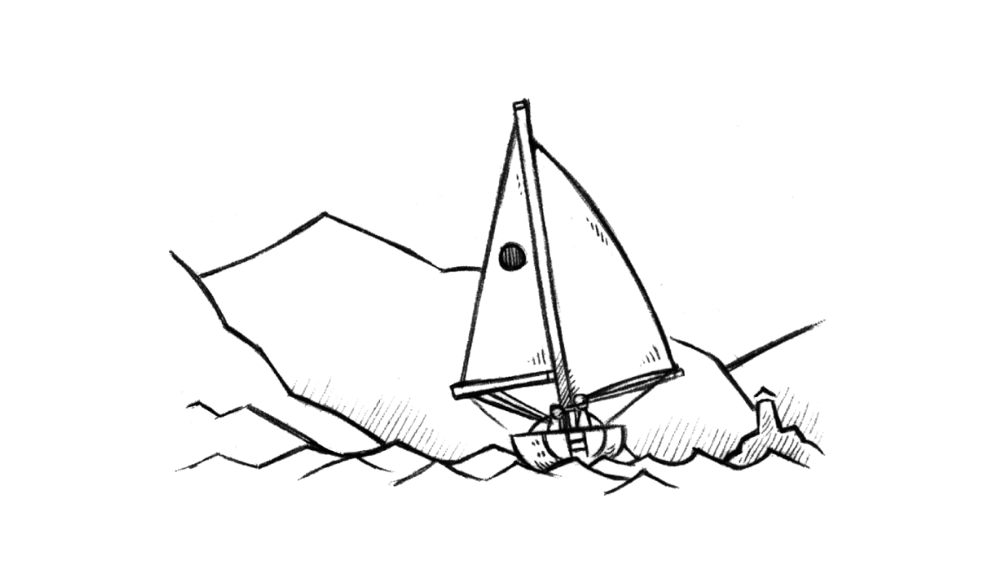
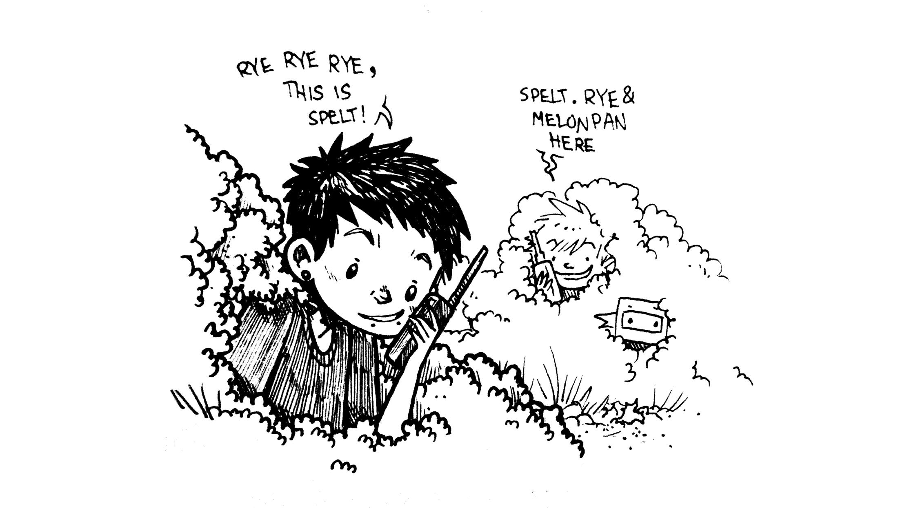
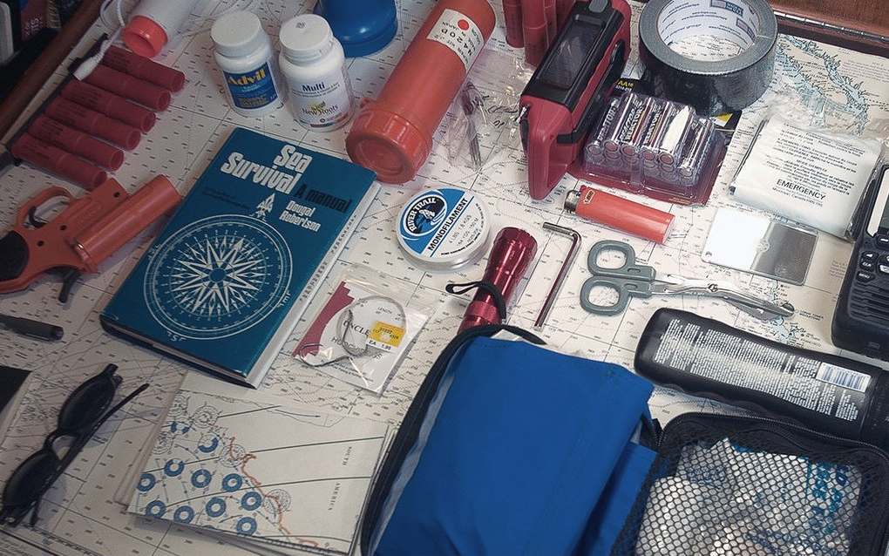

sailing
- Go slow
- Navigation
- No schedules
- Ground tackle
- Communication
- Night sailing
- Seasickness
- Knots
- Safety gear
- Offshore sailing
- Insurance
During long passages, our daytime sailing occupations include: cooking, cleaning, doing fixes on the boat and brainstorming on future projects. We don't have a tight schedule for day watches, we hand the wheel to the other as we get tired.
At sea, I learned how little a person needs, not how much. — Robin Graham
reefing
When sailing, if you can do the same speed with less sail, do it. As soon as you think of reefing down, do it. Should we reduce sails? Yes, always yes.
Shaking out a reef is easier than putting one in in high winds.
navigation
The entire task of navigation rests upon the Navionics app, installed onto all of our mobile devices. Its depth maps, compass, GPS, waypoints, community edits, and more, are all the features that we could ever wish for to get from A to B, over water. We use it along with a separate AIS app for traffic.
schedule
Sailing with a schedule is a recipe for disaster, too many things can happen on a boat and arriving on a precise date can be difficult. Making plans will make you do bad decisions, leaving in bad weather to make a meeting for instance, can be dangerous. Sail with the weather, not against it.
ground tackle

An offshore boat ought to house as many anchors as it can carry (pino carries 3). The ideal anchor is one that can reset with ease if the wind changes direction.
Carrying multiple anchors is useful for kedging to get yourself out of a tricky spot (if you run aground), or to keep your boat off the dock in the event of contrary swell and wind. Kedging involves taking a dinghy out with a small anchor and line in the direction you want to move the boat. The anchor is dropped some distance away, and the person in the dinghy returns to the boat. Then, the sailor pulls the boat up to the anchor, a length of rope or so at a time. It is a slow, and difficult process but it works.
Some sailors argue that a bigger anchor is better, but the quality and shape of the anchor, as well as your scope makes all the difference. If you want to upsize, your bow roller may need replacing, and in the event of windlass breakage, heaving it up by hand could be next to impossible.
We carry many lengths of 3-strand nylon rode, to use for kedging, or for tying up stern lines when med-mooring in ports, or to carry and tie to a point ashore to keep from swinging in busy anchorages.
Read about anchoring etiquette.
communication
As a sailor, you must offer help to a boat in trouble. radio communication is key, specific channels are used in every country for emergencies or information exchange. Every morning, sailors will tune in to a specific channel and listen to a morning net, a public radio exchange in which the weather and local events are announced, as well as boats seeking crew, or items that need to be sold or found. When the weather is foul, the local channels are very busy.
There is an unspoken understanding between long-distance sailors, an exchange of looks when foul weather is amidst. Every member of the sailing community knows the difficulties of life at sea, and is ready to lend a hand. We refer to each other by boat name, and like bird-watchers, we can identify rare breeds by sight. When transiting through world routes, we meet the same boats often, thus strengthening the connection. Talking to other sailors, and exchanging information is extremely valuable. You will make friendships for life.
On our 5-year cruise around the Pacific Ocean, we used a satellite phone.
radio
Onboard Pino we carry a fixed marine VHF radio, a handheld VHF and two transceiver Walkie Talkie two-way radios. VHF/UHF radio waves travel in straight lines (line-of-sight) generally cannot travel beyond the horizon. VHF (very high frequency) is the designation for the range of radio frequencies from 30 to 300 megahertz (MHz)
A marine VHF radio is an important and reliable for bidirectional voice communication both for ship-to-ship and ship-to-shore. In Canada, a Restricted Radiotelephone Operator Permit is required to transmit, it is unlawful to operate a ship station that is not licensed. The handheld marine VHF has the same functionalities as the fixed version, but is equipped with DSC(Digital Select Calling).
We sometimes use the two transceiver two-way radios to talk to each other from shore-to-shore, an Amateur Radio License is required to broadcast with this type of radio in Canada. A license ensures that new users are aware of the existing regulations and don't broadcast on reserved frequencies.
anchoring
When anchoring, use a scope of 1:3 when using all chain, or 1:4 if possible. More scope means less vertical strain on the anchor, and less chance of unsetting it. The longer scope is not always possible in tighter anchorages, which is why having a considerable length of chain will increase horizontal tension. A minimum of 15 m (50 ft) chain linked with at least 90 m (300 ft) of nylon rode is recommended. A nylon rode with a short length of chain requires a bigger scope, of 1:7.
Using a kellet near the chain/rope connection can help further increase horizontal tension.
Don't anchor too close to your neighbor, especially if the neighboring boat is a motor boat, or much larger yacht. Boats orbit their anchors differently, especially lighter vessels. A lighter boat, with an all-nylon rode might "dance" around its anchor more and require more space.
When coming to anchor in a bay to find other boats already occupying it, observe how they are set up, and how far apart they are spaced. If unsure about the set up of a neighboring boat, ask, the last thing you want is to set your anchor too close to theirs. Some boats may have a stern anchor, which means they won't swing, and so if you are near, you must do the same or you will swing into them. Anchor behind other boats, or well in front if there is enough space, and try to stagger your spacing to one side or the other to avoid being directly off someone’s bow.
We prefer to anchor in waters no deeper than 11m, to make it easier to retrieve our anchor. We have found plenty of anchorages in the South Pacific in that depth range. Also, in many places in French Polynesia, The Marshall Islands, Fiji and Tonga, they recommend the use of mooring buoys to keep from damaging coral reefs on the seafloor.
Read about our anchoring setup.
night sailing
During long passages, we must sail throughout the night. Our pattern, for two crew, is one sleeps between 1900 and 2100, then sails between 2100 and 2400, then goes back to sleep from 2400 until 300, and then goes back to the wheel between 300 and 600.
We don't go on deck at night, unless it is an emergency, and then we wake the person off-watch to tell them. We always wear tethers (short) at night, and clip onto jacklines that run the length of the deck if we need to go to the bow. Although, we prefer to wait for daybreak to do big sail changes. We typically reef the sail at night, to avoid having to wake the other person up if there are squalls.
During these long nights, we listen to countless podcasts and audiobooks, which we discuss around breakfast in the morning. If we're feeling especially tired, listening to upbeat music, as opposed to spoken content helps.
seasickness
Here's a few of our tricks against seasickness.
- Don't drink alcohol or coffee the day before leaving.
- Eat before you're hungry.
- Rest before you're tired.
- Don't let yourself get cold.
- If everything else fails, take the helm.
knots
Knots to learn to tie behind your back:
- The square knot
- The sheet bend
- The round turn
- The half hitch
- The rolling hitch
- The bowline
- The prusik knot
The Prusik Knot is an excellent knot to use to climb up the mast. It uses no hardware that might fail, it's easy to slip up and down the halyard, and locks under pressure. Using this along with a bosun's chair, safety lines and foot holds (made of strong webbing) is an efficient and safe way to go up the mast without requiring someone to winch you up.
safety gear
He who lets the sea lull him into a sense of security is in very grave danger. — Hammond Ines
Things can happen, even on a calm ocean, so it is necessary to be alert and to not underestimate the water's strength and unpredictability. Never be complacent, and don't trust the sea. Wear a life jacket (with sailing harness) and tether (especially when night sailing). Safety gear with auto-inflating systems need to be inspected often, and you must carry spares.
Safety gear will last you many years if serviced regularly. Pyrotechnic signaling devices (including aerial flares and hand held signals) expire 42 months after the date of manufacture in accordance with the Coast Guard requirements. Typically, this means that you must replace your flares every three boating seasons. Aerial flares cost $75 per pack of 6 (in Canada), for a boat our size (10 m) we need to have 12 aboard.
Life jackets and life rafts need to be serviced every 3 years, as the auto-inflating canisters need testing, and replacing. Replacement cartridges for auto-inflating PFDs cost about $35 (again, in Canada). If planning to travel for many years out of the country, carry replacement cartridges onboard, because other countries may not carry the ones required by your model and that replacements can't be shipped by air (they're pressurized). Re-packing a liferaft is very expensive, and varies depending on the model, and your location in the world.
Life jackets that are not auto-inflating are fine, but must have a sailing harness to which you can clip a short tether. If the tether is short enough, you won't fall overboard and won't require extra flotation. Floating life jackets that are non-inflating are bulky, and may make it difficult, or uncomfortable to sail in. Wearing a short tether that keeps you to the boat, and prevents you from falling too far overboard is your best security. We recommend a short tether with two clips, so you can clip to another point on the boat while always being clipped on elsewhere.
Run jacklines along the deck, from bow to stern cleats, and keep them within the standing rigging. Make sure the jacklines are flat, and brightly colorful so as to be visible at night. Rope jacklines can trip you up. An even better option for jacklines, is to keep them running as close to the center of the boat as possible, so that there is no chance of falling overboard when attached. Jacklines have to be made from a strong, UV resistant material, you can buy them, but we had ours made.
Every boat should have a ditch bag, that is, a bag filled with emergency supplies in case the boat needs to be abandoned. The bag should have a handheld vhf, spare batteries, noise-producing device, flashlight, water, food (energy dense), charts, sextant, ibuprofen, sunscreen, lighter, medical kit, fish line, fish hooks, mirror, compass, duct tape, flare gun, emergency blanket, etc.
offshore
If you want to go offshore, there is a long list of safety items, tools and spares that you need to have. Read our offshore checklist. Make sure your boat is outfitted with all that is listed, and that your boat has all of the recommended safety features before leaving.
Here's a few quick tips for offshore sailing.
- Anything on deck is sacrificial.
- In heavy winds, heave-to, don't run.
- When tired, heave-to, don't push too hard.
- Learn how to self-steer without external devices.
- Buy a good set of oil skins.
- In the cold, wear wool, not synthetics.
- Store main anchor below decks.
- Secure all floorboards and doors.
Before every long passage, we do a thorough check of all equipment on board, this means looking at the stitching on the sails, testing the electronics, checking the running and standing rigging etc. For the first time, have someone with you to help, you can also hire professionals to inspect your boat. For example, we hired a rigger to inspect Pino's standing rigging when we were planning to go offshore for the first time. We asked him a lot of questions, watched how he did things etc.
insurance
When insuring your boat, you can insure it fully, or you can get liability insurance.
Full insurance. If you hit a rock and damage your keel, full insurance will cover the work, and even the tow to the nearest facility, it will also cover the cost of salvaging it if the vessel sinks. The insurer may not cover sailing in certain areas, especially if outside of protected waters.
Getting full insurance for offshore sailing is possible but expensive, and they have strict requirements. For instance, we met many sailors in Tonga who had a 'leave by date' to sail to New Zealand. This date marked the official start of cyclone season. If they left past this date and something happened to their boat, then their insurance would not have covered the costs. This practice is unfortunate, and downright dangerous, but it is how insurers protect themselves.
Liability insurance. This type of insurance is required if you want to dock anywhere, its purpose is to cover costs if the boat damages facilities or other boats. Even when cruising the world, most places will require it, but it is often better (and cheaper) to purchase it locally—we did this in New Zealand, and in Mexico.
In both cases, your boat will need a survey to get insurance. A full out-of-water survey is required for full insurance. Some companies in Canada ask that boats older than 12 years old be surveyed every 5 years, but wooden boats need a survey every 3 years. An in-water survey may be enough for liability, but it depends on the age of the boat.
Survey
What happens when a surveyor comes to your boat? A surveyor for insurance will look at different things than one for the purchase of a boat, what they care about most is if the vessel is seaworthy. They will check thruhulls, shaft seals, keel bolts, electrical connections, battery setup, check the interior wood for water stains (indicative of water seepage, rot), engine mounts, chain plates, bilge pumps, etc.
Out of water. During an out of water survey, the surveyor will sound the hull with a hammer (tap test) to check for water instruction in the core. They will check the keel, hull for damage or osmosis. There can be surface osmosis (under paint, not severe), or hull osmosis (more severe). They will check your rudder, its alignment, and whether it wobbles or not. They'll also look at thru-hulls.
Empty the boat.If living aboard, you'll have to clear all lockers and surfaces so that they can look through every compartment without having to move anything to get to it (common courtesy). Many surveyors don't want to survey liveaboard boats because people don't want to do this, which makes it very difficult for them to do their work.
Thoughts
We sailed offshore without insurance from 2016 to 2021, because we did not have enough sailing experience and no one wanted to insure us. It was risky, but we sailed with caution. Keeping an eye on the weather, studying charts carefully, picking good anchorages, and having a good rode and anchor was our best possible insurance, but there are dangers that are beyond anyone's control, dangers that even the most skilled sailor cannot avoid, e.g., a shipping container adrift, dead heads at night, whales, etc.
A downside to insurance companies is that they are slowly pricing out small yacht owners. A machinist may not want to help a non-insured sailor with a small fix, because they can charge more to those with it. Small scale projects are not big money makers, and they are more likely to refuse them.